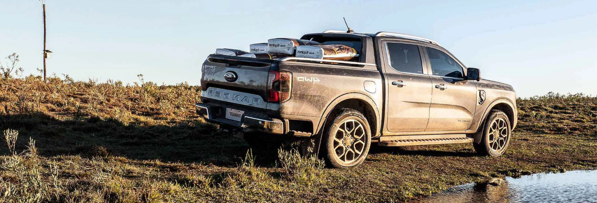

Ford · BrazilFord · Brasil
Agro flow The scalable experienceAgro flow A experiência escalável
ContextContexto
FORDi Brazil — conversational flow for Agro eventsFORDi Brasil — fluxo conversacional para eventos Agro
ScopeEscopo
Scalable flow: from one-off events to a continuous year-round systemFluxo escalável: de eventos pontuais a um sistema contínuo ao longo do ano
DeliverablesEntregas
Discovery, process, architecture and documentationDescoberta, processo, arquitetura e documentação
StatusStatus
Validated and liveValidado e no ar
Non-scalable flows that required constant rework became a scalable system that grows with Agro events.Fluxos não escaláveis, que exigiam retrabalho constante, viraram um sistema escalável que cresce com os eventos Agro.